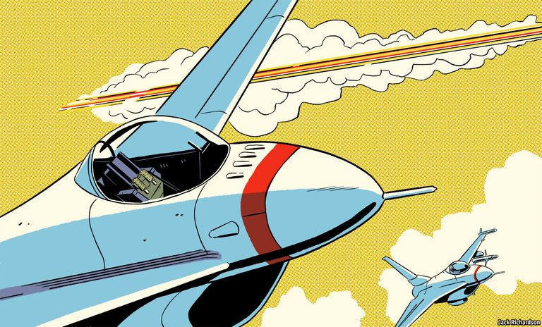
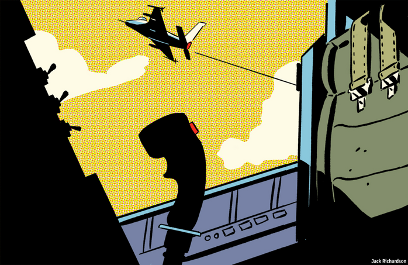

2020-12-31T09:46:48+00:00
Aerial combat
空战
空戰
Virtual mavericks
虚拟独行侠
虛擬獨行俠
Fighter aircraft will soon get AI pilots. But they will be wingmen, not squadron leaders
战斗机很快将配备AI飞行员。但它们只会充当僚机驾驶员，而不是中队长
戰鬥機很快將配備AI飛行員。但它們只會充當僚機駕駛員，而不是中隊長
CLASSIC DOGFIGHTS, in which two pilots match wits and machines to shoot down their opponent with well-aimed gunfire, are a thing of the past. Guided missiles have seen to that, and the last recorded instance of such duelling was 32 years ago, near the end of the Iran-Iraq war, when an Iranian F-4 Phantom took out an Iraqi Su-22 with its 20mm cannon.
在传统的空中“狗斗”中，两名飞行员比拼头脑和机器，用机炮瞄准并击落对手。这已成为历史，导弹接过了任务。最近一次记录在案的狗斗发生在32年前：两伊战争接近尾声之际，伊朗的一架F-4幻影战斗机用它的20毫米机炮击落了伊拉克的一架苏-22。
在傳統的空中“狗斗”中，兩名飛行員比拼頭腦和機器，用機炮瞄準並擊落對手。這已成為歷史，導彈接過了任務。最近一次記錄在案的狗斗發生在32年前：兩伊戰爭接近尾聲之際，伊朗的一架F-4幻影戰鬥機用它的20毫米機炮擊落了伊拉克的一架蘇-22。
But memory lingers, and dogfighting, even of the simulated sort in which the laws of physics are substituted by equations running inside a computer, is reckoned a good test of the aptitude of a pilot in training. And that is also true when the pilot in question is, itself, a computer program. So, when America’s Defence Advanced Research Projects Agency (DARPA), an adventurous arm of the Pentagon, considered the future of air-to-air combat and the role of artificial intelligence (AI) within that future, it began with basics that Manfred von Richthofen himself might have approved of.
但记忆挥之不去，而狗斗被认为是对受训飞行员的天赋的一种有效测验。即使是模拟狗斗也一样——在这里物理法则被代之以一台计算机内部的方程式运算。而当飞行员本身是一个计算机程序时同样如此。因此，当五角大楼下属的风险创新部门美国国防部高级研究计划局（DARPA）考虑空对空作战的未来以及人工智能（AI）在其中的角色时，它从最基本的入手——如果一战德军王牌飞行员曼弗雷德·冯·里希特霍芬（Manfred von Richthofen）在世，他可能也会赞同的。
但記憶揮之不去，而狗斗被認為是對受訓飛行員的天賦的一種有效測驗。即使是模擬狗斗也一樣——在這裡物理法則被代之以一台計算機內部的方程式運算。而當飛行員本身是一個計算機程序時同樣如此。因此，當五角大樓下屬的風險創新部門美國國防部高級研究計劃局（DARPA）考慮空對空作戰的未來以及人工智能（AI）在其中的角色時，它從最基本的入手——如果一戰德軍王牌飛行員曼弗雷德·馮·里希特霍芬（Manfred von Richthofen）在世，他可能也會贊同的。
In August eight teams, representing firms ranging from large defence contractors to tiny startups, gathered virtually under the auspices of the Johns Hopkins Applied Physics Laboratory (APL) in Laurel, Maryland, for the three-day final of DARPA’s AlphaDogfight trials. Each had developed algorithms to control a virtual F-16 in simulated dogfights. First, these were to be pitted against each other. Then the winner took on a human being.
今年8月，在位于马里兰州劳雷尔市的约翰斯·霍普金斯应用物理实验室（APL）的主持下，从大型国防承包商到小型创业公司的八支代表队齐聚线上，展开为期三天的DARPA阿尔法狗斗选拔赛决赛。每支队伍都开发了算法，在模拟狗斗中控制一架虚拟的F-16战斗机。它们先是相互比试，获胜者再与一名人类飞行员较量。
今年8月，在位於馬里蘭州勞雷爾市的約翰斯·霍普金斯應用物理實驗室（APL）的主持下，從大型國防承包商到小型創業公司的八支代表隊齊聚線上，展開為期三天的DARPA阿爾法狗斗選拔賽決賽。每支隊伍都開發了算法，在模擬狗斗中控制一架虛擬的F-16戰鬥機。它們先是相互比試，獲勝者再與一名人類飛行員較量。
Dropping the pilot?
丢弃领航者？
丟棄領航者？
“When I got started”, says Colonel Dan Javorsek, who leads DARPA’s work in this area, “there was quite a bit of scepticism of whether the AI algorithms would be up to the task.” In fact, they were. The winner, created by Heron Systems, a small firm in the confusingly named town of California, Maryland, first swept aside its seven digital rivals and then scored a thumping victory against the human, a pilot from America’s air force, in five games out of five.
“我刚开始做这个项目时，不少人都怀疑AI算法能不能胜任。”DARPA负责这项工作的丹·贾沃赛克（Dan Javorsek）上校说。但事实上，AI做到了。最终胜出的算法来自苍鹭系统公司（Heron Systems）这家位于马里兰州加利福尼亚镇（名字很容易与同名的州混淆）的小公司。它先是横扫其他七个数字对手，然后以5比0大胜来自美国空军的一名人类飞行员。
“我剛開始做這個項目時，不少人都懷疑AI算法能不能勝任。”DARPA負責這項工作的丹·賈沃賽克（Dan Javorsek）上校說。但事實上，AI做到了。最終勝出的算法來自蒼鷺系統公司（Heron Systems）這家位於馬里蘭州加利福尼亞鎮（名字很容易與同名的州混淆）的小公司。它先是橫掃其他七個數字對手，然後以5比0大勝來自美國空軍的一名人類飛行員。
Though dogfighting practice, like parade-ground drill and military bands, is a leftover from an earlier form of warfare that still serves a residual purpose, the next phase of DARPA’s ACE (air combat evolution) project belongs firmly in the future, for it will require the piloting programs to control two planes simultaneously. Also, these virtual aircraft will be armed with short-range missiles rather than guns. That increases the risk of accidental fratricide, for a missile dispatched towards the wrong target will pursue it relentlessly. Tests after that will get more realistic still, with longer-range missiles, the use of chaff and flares, and a requirement to deal with corrupt data and time lags of a sort typical of real radar information.
尽管狗斗和阅兵式、军乐团等一样都是旧式战争的遗留物，仍有一些残余功能，但DARPA的“王牌”项目（ACE，“空战进化”的首字母缩写）的下一阶段完完全全面向未来，因为它将要求驾驶程序同时控制两架战机。此外，这些虚拟战机将装载短程导弹而非机炮。这加大了意外自相残杀的风险，因为弄错了目标的导弹会对其穷追不舍。再往后的测试还将变得更加真实，会配备远程导弹，使用干扰箔和红外诱饵弹，还需要处理在真实雷达信息中常见的那类数据损坏和时滞。
儘管狗斗和閱兵式、軍樂團等一樣都是舊式戰爭的遺留物，仍有一些殘餘功能，但DARPA的“王牌”項目（ACE，“空戰進化”的首字母縮寫）的下一階段完完全全面向未來，因為它將要求駕駛程序同時控制兩架戰機。此外，這些虛擬戰機將裝載短程導彈而非機炮。這加大了意外自相殘殺的風險，因為弄錯了目標的導彈會對其窮追不捨。再往後的測試還將變得更加真實，會配備遠程導彈，使用干擾箔和紅外誘餌彈，還需要處理在真實雷達信息中常見的那類數據損壞和時滯。
The point of all this, putative Top Guns should be reassured, is not so much to dispense with pilots as to help them by “a redistribution of cognitive workload within the cockpit”, as Colonel Javorsek puts it. In theory, taking the pilot out of the plane lets it manoeuvre without regard for the impact of high g-forces on squishy humans. An uncrewed plane is also easier to treat as cannon-fodder. Still, most designs for new fighter jets have not done away with cockpits. For example, both of the rival European programmes—the British-led Tempest and the Franco-German-Spanish Future Combat Air System (FCAS)—are currently “optionally manned”. There are several reasons for this, explains Nick Colosimo, a lead engineer at BAE Systems, Tempest’s chief contractor.
应该能让公认的王牌飞行员们放心的是，这一切不是为了省掉飞行员。用贾沃赛克的说法，这是要通过“重新分配驾驶舱内的认知负荷”来帮助飞行员。理论上讲，把飞行员移出飞机可以让飞机自由移动旋转，而不用考虑高G力对脆弱人体的影响。同时也能更安心地让飞机当炮灰。不过，大多数新型战机在设计时并没有省掉驾驶舱。比如，两个互相竞争的欧洲项目——英国主导的“暴风雨”（Tempest）以及法国、德国和西班牙合作的FCAS（未来作战空中系统）——目前都是“可选人员驾驶”。这有几个原因，暴风雨战机的总承包商BAE系统公司（BAE Systems）的首席工程师尼克·科洛西莫（Nick Colosimo）解释道。
應該能讓公認的王牌飛行員們放心的是，這一切不是為了省掉飛行員。用賈沃賽克的說法，這是要通過“重新分配駕駛艙內的認知負荷”來幫助飛行員。理論上講，把飛行員移出飛機可以讓飛機自由移動旋轉，而不用考慮高G力對脆弱人體的影響。同時也能更安心地讓飛機當炮灰。不過，大多數新型戰機在設計時並沒有省掉駕駛艙。比如，兩個互相競爭的歐洲項目——英國主導的“暴風雨”（Tempest）以及法國、德國和西班牙合作的FCAS（未來作戰空中系統）——目前都是“可選人員駕駛”。這有幾個原因，暴風雨戰機的總承包商BAE系統公司（BAE Systems）的首席工程師尼克·科洛西莫（Nick Colosimo）解釋道。
One is that eliminating the pilot does not provide much of a saving. The cockpit plus the assorted systems needed to keep a human being alive and happy at high altitude—cabin pressure, for example—contribute only 1-2% of a plane’s weight. A second is that even AI systems of great virtuosity have shortcomings. They tend not to be able to convey how they came to a decision, which makes it harder to understand why they made a mistake. They are also narrowly trained for specific applications and thus fail badly when outside the limits of that training or in response to “spoofing” by adversaries.
其一，省掉飞行员并不能省下多少钱。驾驶舱以及让人在高空保持存活和感觉舒适所需的各种系统——比如座舱压力——只占飞机重量的1%至2%。其二，即使是非常高超精巧的AI系统也有缺陷。它们往往无法表达自己是如何做出决定的，这样人们也就更难了解它们为何犯错。同时，它们接受的是针对特定应用的有限训练，因而一旦情况超出它们的训练范围或者要应对敌人的“欺骗攻击”时，就会严重失灵。
其一，省掉飛行員並不能省下多少錢。駕駛艙以及讓人在高空保持存活和感覺舒適所需的各種系統——比如座艙壓力——只佔飛機重量的1%至2%。其二，即使是非常高超精巧的AI系統也有缺陷。它們往往無法表達自己是如何做出決定的，這樣人們也就更難了解它們為何犯錯。同時，它們接受的是針對特定應用的有限訓練，因而一旦情況超出它們的訓練範圍或者要應對敵人的“欺騙攻擊”時，就會嚴重失靈。
An example of this inflexibility is that, at one point in the AlphaDogfight trials, the organisers threw in a cruise missile to see what would happen. Cruise missiles follow preordained flight paths, so behave more simply than piloted jets. The AI pilots struggled with this because, paradoxically, they had beaten the missile in an earlier round and were now trained for more demanding threats. “A human pilot would have had no problem,” observes Chris DeMay, who runs the APL’s part of ACE. “AI is only as smart as the training you give it.”
举一个这种缺乏灵活度的例子。在阿尔法狗斗选拔赛中，组织者额外加入了一枚巡航导弹，看看会发生什么。巡航导弹按既定路线飞行，因此其行为比有人驾驶的飞机更简单。而AI自动驾驶仪却应付不了它，这是因为它们在前一轮比赛中已经成功避开了这枚导弹，而在眼下正针对更高级别的威胁受训。这真是荒谬。“人类飞行员应该就不会有问题，”APL实验室负责王牌项目的克里斯·德迈（Chris DeMay）表示，“AI能有多聪明，全看你怎么训练它。”
舉一個這種缺乏靈活度的例子。在阿爾法狗斗選拔賽中，組織者額外加入了一枚巡航導彈，看看會發生什麼。巡航導彈按既定路線飛行，因此其行為比有人駕駛的飛機更簡單。而AI自動駕駛儀卻應付不了它，這是因為它們在前一輪比賽中已經成功避開了這枚導彈，而在眼下正針對更高級別的威脅受訓。這真是荒謬。“人類飛行員應該就不會有問題，”APL實驗室負責王牌項目的克里斯·德邁（Chris DeMay）表示，“AI能有多聰明，全看你怎麼訓練它。”
This matters not only in the context of immediate military success. Many people worry about handing too much autonomy to weapons of war—particularly when civilian casualties are possible. International humanitarian law requires that any civilian harm caused by an attack be no more than proportionate to the military advantage hoped for. An AI, which would be hard to imbue with relevant strategic and political knowledge, might not be able to judge for itself whether an attack was permitted.
这不仅对夺取眼前的军事胜利很重要。很多人对赋予战争武器太多的自主权感到担忧，尤其是在有可能造成平民伤亡的情况下。国际人道法规定，军事攻击对平民造成的任何伤害应该保持在与期望获得的军事利益相称的程度以内。而AI很难具备相关的战略和政治知识，因此可能无法自主判断是否应该发动攻击。
這不僅對奪取眼前的軍事勝利很重要。很多人對賦予戰爭武器太多的自主權感到擔憂，尤其是在有可能造成平民傷亡的情況下。國際人道法規定，軍事攻擊對平民造成的任何傷害應該保持在與期望獲得的軍事利益相稱的程度以內。而AI很難具備相關的戰略和政治知識，因此可能無法自主判斷是否應該發動攻擊。
Of course, a human being could pilot an uncrewed plane remotely, says Mr Colosimo. But he doubts that communications links will ever be sufficiently dependable, given the “contested and congested electromagnetic environment”. In some cases, losing communications is no big deal; a plane can fly home. In others, it is an unacceptable risk. For instance, FCAS aircraft intended for France’s air force will carry that country’s air-to-surface nuclear missiles.
当然，人类可以远程控制无人驾驶飞机，科洛西莫表示。但是，鉴于“对抗和拥挤的电磁环境”，他怀疑通信链路是否总是足够可靠。有时候，通信中断无关紧要，飞机还是可以返航。有些情况下却会构成不可接受的风险。比如，为法国空军设计的FCAS战机将携带该国的空对面核导弹。
當然，人類可以遠程控制無人駕駛飛機，科洛西莫表示。但是，鑒於“對抗和擁擠的電磁環境”，他懷疑通信鏈路是否總是足夠可靠。有時候，通信中斷無關緊要，飛機還是可以返航。有些情況下卻會構成不可接受的風險。比如，為法國空軍設計的FCAS戰機將攜帶該國的空對面核導彈。
The priority for now, therefore, is what armed forces call “manned-unmanned teaming”. In this, a pilot hands off some tasks to a computer while managing others. Today’s pilots no longer need to point their radars in the right direction manually, for instance. But they are still forced to accelerate or turn to alter the chances of the success of a shot, says Colonel Javorsek. Those, he says, “are tasks that are very well suited to hand over”.
因此，目前的首要任务是建立军队所说的“有人-无人协同”。其中，飞行员将部分任务交给计算机，同时自己掌管其他任务。比如，今天的飞行员不再需要手动操纵雷达瞄准目标。但他们仍必须通过加速或调整方向来改变射击的命中率，贾沃赛克表示。这些“都是非常适合移交给计算机的任务”，他说。
因此，目前的首要任務是建立軍隊所說的“有人-無人協同”。其中，飛行員將部分任務交給計算機，同時自己掌管其他任務。比如，今天的飛行員不再需要手動操縱雷達瞄準目標。但他們仍必須通過加速或調整方向來改變射擊的命中率，賈沃賽克表示。這些“都是非常適合移交給計算機的任務”，他說。
One example of such a handover comes from Lockheed Martin, an American aerospace giant. It is developing a missile-avoidance system that can tell which aircraft in a formation of several planes is the target of a particular missile attack, and what evasive actions are needed. This is something that currently requires the interpretation by a human being of several different displays of data.
美国航空航天巨头洛克希德·马丁就有这样移交任务的例子。该公司正在研发一种导弹规避系统，它能判断在多架飞机组成的编队中哪一架是某颗导弹的攻击目标，以及需要采取何种规避行动。目前，这种判断还需要人类解读多个不同显示器上的数据才能做出。
美國航空航天巨頭洛克希德·馬丁就有這樣移交任務的例子。該公司正在研發一種導彈規避系統，它能判斷在多架飛機組成的編隊中哪一架是某顆導彈的攻擊目標，以及需要採取何種規避行動。目前，這種判斷還需要人類解讀多個不同顯示器上的數據才能做出。
Another example is ground-collision avoidance. In 2018 a team led by the American air force, and including Lockheed Martin, won the Collier Trophy, an award for the greatest achievement in aeronautics in America, for its Automatic Ground Collision Avoidance System, which takes control of a plane if it is about to plough into the terrain. Such accidents, which can happen if a pilot experiencing severe g-forces passes out, account for three-quarters of the deaths of F-16 pilots. So far, the system has saved the lives of ten such pilots.
另一个例子是避免撞击地面。2018年，美国空军领导的一个团队（洛克希德·马丁也参与其中）凭借其自动对地防撞系统赢得了科利尔奖（Collier Trophy）这一表彰美国航空航天领域最伟大成就的奖项。该系统可以在飞机即将撞上地面时控制飞机。如果飞行员在严重的G力影响下昏迷就可能发生这类事故，F-16飞行员中四分之三的死亡都是因此而导致的。截至目前，该系统已经从这类事故中挽救了10名飞行员的生命。
另一個例子是避免撞擊地面。2018年，美國空軍領導的一個團隊（洛克希德·馬丁也參與其中）憑藉其自動對地防撞系統贏得了科利爾獎（Collier Trophy）這一表彰美國航空航天領域最偉大成就的獎項。該系統可以在飛機即將撞上地面時控制飛機。如果飛行員在嚴重的G力影響下昏迷就可能發生這類事故，F-16飛行員中四分之三的死亡都是因此而導致的。截至目前，該系統已經從這類事故中挽救了10名飛行員的生命。
A dog in the fight?
战斗的狗？
戰鬥的狗？
Eventually, DARPA plans to pit teams of two planes against each other, each team being controlled jointly by a human and an AI. Many air forces hope that, one day, a single human pilot might even orchestrate, though not micromanage, a whole fleet of accompanying unmanned planes.
DARPA的终极计划是让每组两架飞机的队伍相互对抗，每支队伍由一名人类飞行员和一个AI自动驾驶仪共同控制。许多空军人士希望，有朝一日人类飞行员甚至可以一人指挥（尽管不是“微管理”）整支无人驾驶的僚机编队。
DARPA的終極計劃是讓每組兩架飛機的隊伍相互對抗，每支隊伍由一名人類飛行員和一個AI自動駕駛儀共同控制。許多空軍人士希望，有朝一日人類飛行員甚至可以一人指揮（儘管不是“微管理”）整支無人駕駛的僚機編隊。
For this to work, the interaction between human and machine will need to be seamless. Here, as Suzy Broadbent, a human-factors psychologist at BAE, observes, the video-game and digital-health industries both have contributions to make. Under her direction, Tempest’s engineers are working on “adaptive autonomy”, in which sensors measure a pilot’s sweat, heart-rate, brain activity and eye movement in order to judge whether he or she is getting overwhelmed and needs help. This approach has been tested in light aircraft, and further tests will be conducted next year in Typhoons, fighter jets made by a European consortium that includes BAE.
要做到这一点，需要建立无缝衔接的人机交互。在这个方面，正如BAE公司的人为因素心理学家苏西·布罗德本特（Suzy Broadbent）所说，电子游戏和数字医疗这两个行业都可以有所作为。在她的指导下，暴风雨战机的工程师们正在研究“调适性自主”，即用传感器测量飞行员的出汗量、心率、大脑活动和眼运动等指标，以判断他或她是否处于不知所措的状态而需要帮助。这种方法已经在轻型战机上做过测试，明年将在由BAE等公司组成的一家欧洲联营企业制造的“台风”（Typhoon）战机上进一步测试。
要做到這一點，需要建立無縫銜接的人機交互。在這個方面，正如BAE公司的人為因素心理學家蘇西·布羅德本特（Suzy Broadbent）所說，電子遊戲和數字醫療這兩個行業都可以有所作為。在她的指導下，暴風雨戰機的工程師們正在研究“調適性自主”，即用傳感器測量飛行員的出汗量、心率、大腦活動和眼運動等指標，以判斷他或她是否處於不知所措的狀態而需要幫助。這種方法已經在輕型戰機上做過測試，明年將在由BAE等公司組成的一家歐洲聯營企業製造的“颱風”（Typhoon）戰機上進一步測試。
Ms Broadbent’s team is also experimenting with novel ways to deliver information to a pilot, from a Twitter-like feed to an anthropomorphic avatar. “People think the avatar option might be a bit ridiculous,” says Ms Broadbent, who raises the spectre of Clippy, a famously irritating talking paper clip that harangued users of Microsoft Office in the 1990s and 2000s. “Actually, think about the information we get from each other’s faces. Could a calming voice or smiling face help?”
布罗德本特的团队也在测试用推特式消息流、拟人化形象等各种新鲜方式向飞行员发送信息。“人们可能认为选用人物化身有点可笑。”布罗德本特说，她提到上世纪90年代和本世纪头10年间微软Office中的大眼夹（Clippy）留给人们的阴影。这枚喋喋不休的回形针出了名地招人烦。“说实在的，想想我们从彼此脸上获得的信息。平静的声音或者微笑的脸庞能帮到我们吗？”
布羅德本特的團隊也在測試用推特式消息流、擬人化形象等各種新鮮方式向飛行員發送信息。“人們可能認為選用人物化身有點可笑。”布羅德本特說，她提到上世紀90年代和本世紀頭10年間微軟Office中的大眼夾（Clippy）留給人們的陰影。這枚喋喋不休的回形針出了名地招人煩。“說實在的，想想我們從彼此臉上獲得的信息。平靜的聲音或者微笑的臉龐能幫到我們嗎？”
Getting humans to trust machines is not a formality. Mr Colosimo points to the example of an automated weather-information service introduced on aircraft 25 years ago. “There was some resistance from the test pilots in terms of whether they could actually trust that information, as opposed to radioing through to air traffic control and speaking to a human.” Surrendering greater control requires breaking down such psychological barriers.
让人类信任机器并不是走形式。科洛西莫以25年前飞机上开始采用自动气象信息服务为例。“当时参与测试的飞行员有一些抵触，不知道自己是不是真的可以信任这些并不是通过无线电与空管人员通话获得的信息。”交出更多控制权需要破除这种心理障碍。
讓人類信任機器並不是走形式。科洛西莫以25年前飛機上開始採用自動氣象信息服務為例。“當時參與測試的飛行員有一些抵觸，不知道自己是不是真的可以信任這些並不是通過無線電與空管人員通話獲得的信息。”交出更多控制權需要破除這種心理障礙。
One of the aims of AlphaDogfight, says Mr DeMay, was to do just that by bringing pilots together with AI researchers, and letting them interact. Unsurprisingly, more grizzled stick-jockeys tend to be set in their ways. “The older pilots who grew up controlling the radar angle…see this sort of technology as a threat,” says Colonel Javorsek. “The younger generation, the digital natives that are coming up through the pipeline…trust these autonomous systems.” That is good news for DARPA; perhaps less so for Colonel Javorsek. “These things that I’m doing can be rather hazardous to one’s personal career”, the 43-year-old officer observes, “given that the people who make decisions on what happens to me are not the 25-year-old ones. They tend to be the 50-year-old ones.”■
德迈表示，阿尔法狗斗的目标之一正是要通过让飞行员和AI研究人员合作交流来移除这种障碍。不出所料，用惯了操纵杆的年长飞行员往往墨守成规。“那些一辈子都在控制雷达角度的老飞行员……觉得这类技术是个威胁，”贾沃赛克说，“年轻的一代，伴随着这类技术成长起来的数字原住民……信任这些自主系统。”这对DARPA而言是一个好消息；但对贾沃赛克来说或许没那么好了。“我现在做的这些事情对于个人职业生涯可能是相当危险的，”这位43岁的上校表示，“因为那些决定我命运的人不是25岁。他们往往是50岁的人。”
德邁表示，阿爾法狗斗的目標之一正是要通過讓飛行員和AI研究人員合作交流來移除這種障礙。不出所料，用慣了操縱桿的年長飛行員往往墨守成規。“那些一輩子都在控制雷達角度的老飛行員……覺得這類技術是個威脅，”賈沃賽克說，“年輕的一代，伴隨着這類技術成長起來的數字原住民……信任這些自主系統。”這對DARPA而言是一個好消息；但對賈沃賽克來說或許沒那麼好了。“我現在做的這些事情對於個人職業生涯可能是相當危險的，”這位43歲的上校表示，“因為那些決定我命運的人不是25歲。他們往往是50歲的人。”